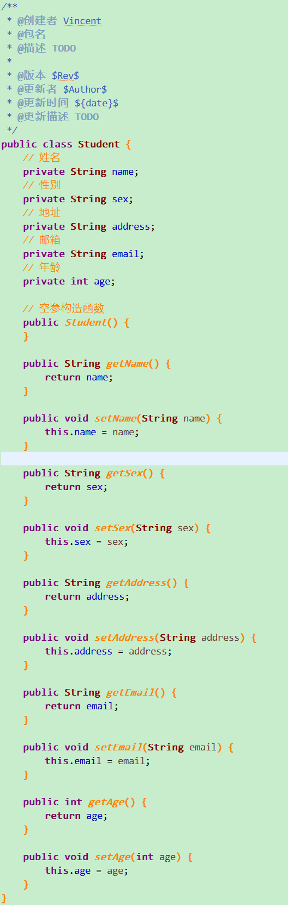
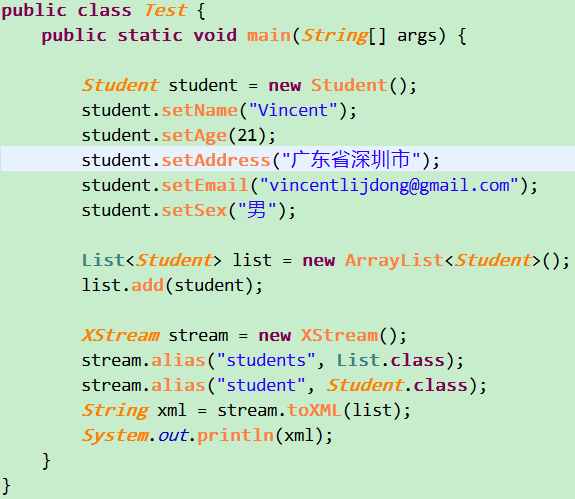
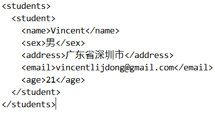

xStresm可以完美解决javabean和xml之间的转换，不但可以修改某个特定节属性和节点的名称，还支持json的转换。
转载请注明出处:http://vincentljdong.github.io/2016/04/18/xStream%E8%A7%A3%E6%9E%90xml/
xStream框架
&emspxStresm可以完美解决javabean和xml之间的转换，不但可以修改某个特定节属性和节点的名称，还支持json的转换。
准备工作
在开始写代码之前，有一个jar包是不可缺少的，不用我说大家应该都知道是什么。这里我就不提供xStream的下载了，大家可以自行到GitHub下载。
把你下载好的jar包放在你的工程lib文件夹下
测试代码
- 首先new一个JavaBean出来，也就是创建一个Student.class,后面javabean转换xml时我们会使用这些数据

- 核心代码Test.java

创建javabean对象，调用set方法添加数据，然后创建List集合,将javabean对象添加到集合。
创建XStream对象解析javabean，然后将javabean转换为xml
注意：
运行起来我们会发现报错了
Caused by: java.lang.ClassNotFoundException: org.xmlpull.v1.XmlPullParserException
这是因为我们还缺少一个jre包，从异常可以看出少了一个xmlpull包
这个包也可以在github下载，我们将这个包导进去，在运行一下
控制台显示结果：

是不是感觉特别简单，这里讲的只是将javabean解析为xml,还没讲怎样将xml数据解析封装成业务Bean,并且获取数据进行绑定显示在界面，这些后期都会一一介绍。当然后面我们会讲另一种数据，json数据是如何解析的，并且会介绍比较常见的几种解析Json的框架(Gson、FastJson等)，并带你们深入理解。
联系方式：lijiandongv@163.com 有什么问题或者建议欢迎留言到我的邮箱
每日一碗鸡汤
“除非你改变了交往的人和阅读的书，否则，你的五年之后和现在完全一样”。